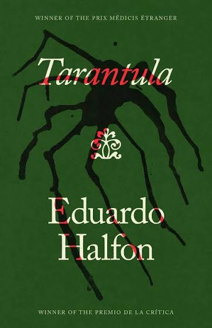
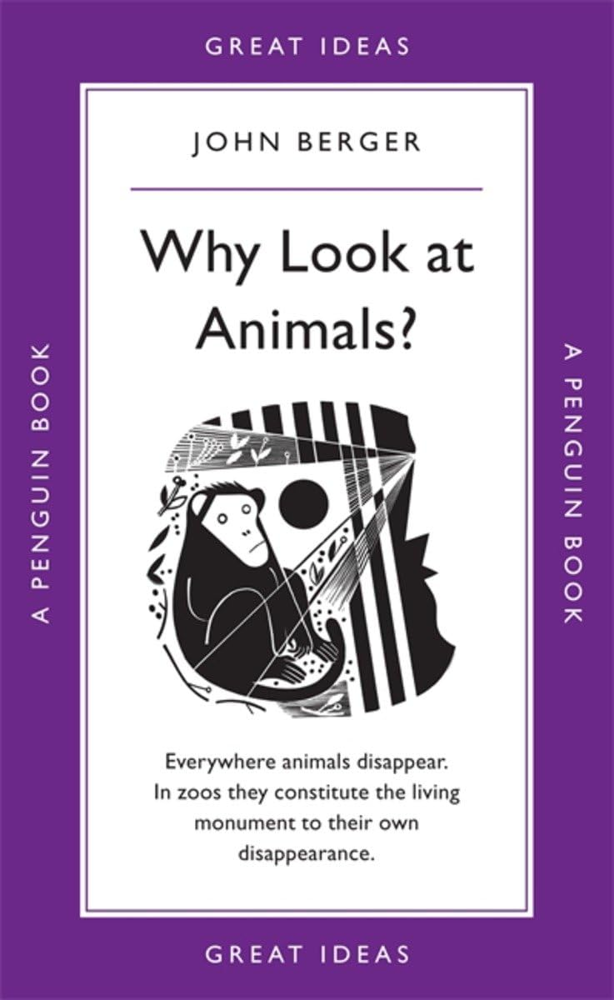

Tarantula
As of 06/08 I am on page 39... yes I know I know. But so far what fun!
Well fun not as in what a jolly topic, but fun for the mind. This is one of the first books I have bought new for
quite some time, very pleased!.
12/08 - I'm done! The pace reallyyyy picked up and the tone chnaged to something much darker and sinister.
Great book very evocative 10/10 :)

"Is imagination so fanciful and audacious that it can invent a memory and then transform it into something we understand as true?"
Why Look at Animals?
A gift from my lovely friend Faisal!
A beautiful collection of essays reflecting on our
relationship with animals and the world around us. The titular story is a critique on zoos and domestication that is intertwined
with Berger's memories of trips with his Father as a child. This book, beautiful though it is, made me unsettled. Now, that is is no way a
critique but a plea! I've always hated zoos - the sanitisation and claustrophobia made me an annoying child on school and family trips. But I have
always found this hard to articulate; I am grateful for Berger's words and his ability to make me feel like I am myself seeing
into those orangutan eyes. I won't write more about this book, not that I care about 'spoilers'
as such, but the desolation I felt I'd like to put off for a little while. The pdf of some of the essays are available online, do take time to read.

"Yet nowhere in a zoo can a stranger encounter the look of an animal."